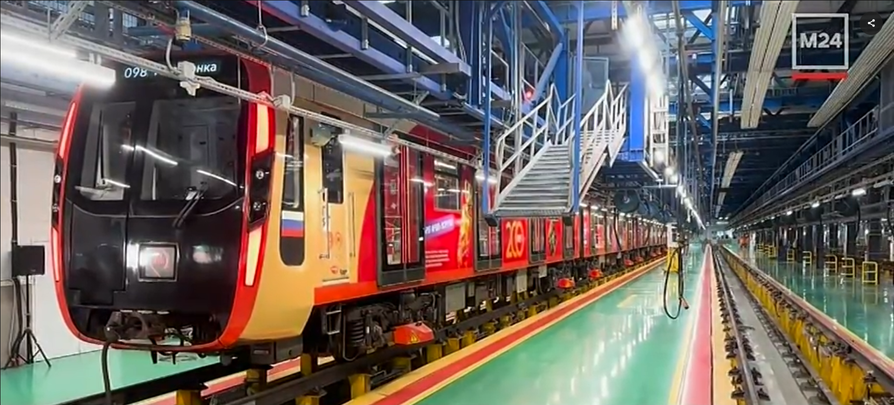

Состав №75073-75074
Семивагонный состав модели 81-775 «Москва-2020», построенный в ноябре 2020 года. С 27 ноября 2026 года эксплуатируется с тематическим оформлением «Кондитерской фабрике "Рот Фронт" — 200 лет».
Приписан к депо ТЧ-4 «Красная Пресня».
0
год постройки
0
вагонов в составе
0
лет фабрике
Общая информация
| Параметр | Значение |
|---|---|
| Город | Москва 🇷🇺 |
| Депо/Парк | ТЧ-4 «Красная Пресня» |
| Модель | 81-775 «Москва-2020» |
| Построен | 11.2020 |
| Начало работы | 01.2021 |
| Текущее состояние | Эксплуатируется |
| Назначение | Пассажирский |
| Тематическое оформление | «Рот Фронт — 200 лет» |
Составность
75073 — 77073 — 76128 — 76129 — 76130 — 77074 — 75074
7 вагонов · с 30.11.2020
История
30.11.2020
Поступление в метрополитен
Поступил в метрополитен через гейт ТЧ-18 «Солнцево».
Начало декабря 2020
Поступление в депо
Поступил в депо приписки ТЧ-4 «Красная Пресня».
12.2020 — 02.2022
Тематическое брендирование «Это Москва 2020» / «Забота»
12.04.2024
Тематическое брендирование «Поехали!»
Фотогалерея

Вагон №75073
📌 Станция «Каширская»
Тематический состав к 200-летию фабрики.
Нажмите на фото для увеличения